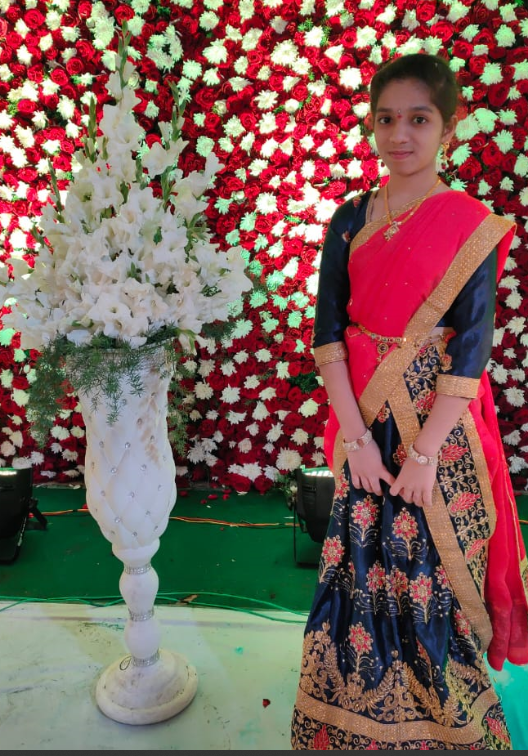

Introduction
Welcome to my About Me page! I'm Parvathi, a passionate Web developer based in Vellore. With a background in Computer Science and engineering, I thrive on turning ideas into innovative solutions.
My Journey
My journey in the world of Computer Science and Engineering began with a deep curiosity and a love for programming. My passion for technology ignited during my early years, fueled by an insatiable curiosity to understand how things work and a desire to create meaningful solutions. As I delved into the world of coding, algorithms, and software development, each project became a stepping stone in my learning process.
My Photos
Here's a glimpse of me!
My Interests
Outside of work, I'm passionate about Singing. Whether it's reading books or singing, these activities fuel my creativity and keep me inspired always.Music has always been a powerful muse for me. Singing allows me to contact with emotions and tell stories through melody. The creative process of making music not only nurtures the soul but also enhance my problem-solving skills. It is not just about hitting the right nodes but also about building a connection with the audience. Also literature is also a self-discovering and continuous learning.